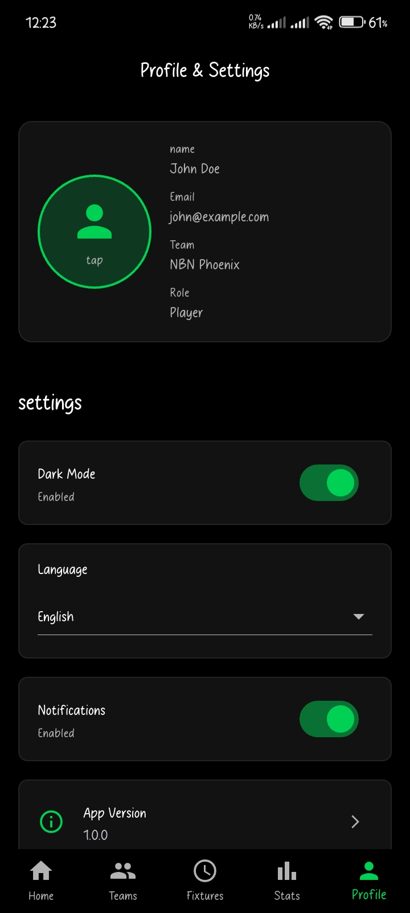

🚀 Project Overview
Hoops Track Kenya is a mobile-first analytics platform designed to centralize basketball statistics, track player performance, and provide structured team insights for the Kenyan basketball ecosystem.
The platform addresses the lack of reliable, data-driven performance tracking in local basketball by providing a structured system for recording, analyzing, and visualizing game statistics.
🎯 Problem Statement
Kenyan basketball lacked:
- A centralized player performance database
- Structured statistical tracking
- Historical performance analytics
- A digital performance comparison system
- Accessible team and fixture insights
Most tracking was manual, fragmented, or inconsistent. Hoops Track Kenya was built to solve this gap through a scalable, modular application architecture.
👨💻 My Role
- Sole Architect & Developer — Designed the entire system from scratch
- UI/UX Design — Crafted user-centric navigation and interfaces
- Backend Integration — Integrated REST APIs and data services
- Database Design — Structured data models for scalability
- Application Architecture — Implemented clean, maintainable code patterns
I designed the system end-to-end, focusing on maintainability, scalability, and clean separation of concerns.
🏗 Architecture & Technical Design
The application follows a structured MVVM (Model-View-ViewModel) pattern using Shell-based navigation.
Core Architectural Principles
- Clean separation of UI and business logic
- Modular page navigation using Shell
- Service-layer abstraction for data access
- Parameterized navigation for deep linking
- Structured folder organization for scalability
🧠 Technology Stack
Flutter
Cross-platform mobile framework
Dart
Primary language for business logic
MVVM Pattern
Clean architecture paradigm
Shell Navigation
Scalable route management
REST APIs
Backend integration
JSON Data Exchange
Structured parameter passing
📊 Core Features
1️⃣ Player Performance Tracking
- Points, assists, rebounds, efficiency metrics
- Historical performance comparison
- Player profile pages with detailed stats
2️⃣ Team Analytics
- Team statistics dashboard
- Game performance breakdown
- Offensive and defensive metrics
3️⃣ Fixture & Game Management
- Upcoming fixtures display
- Match summaries and results
- Structured data-driven analytics
4️⃣ Structured Navigation System
- Deep linking to PlayerProfilePage
- TeamDetailPage routing
- FixtureDetailPage access
- JSON-encoded parameter passing
- Navigation back-stack management
⚙ Engineering Decisions
Why MVVM?
To ensure:
- Testability of business logic without UI dependencies
- Maintainability through clear separation of concerns
- Scalability for future feature additions
- Reusability of ViewModels across multiple Views
Why Shell Navigation?
- Centralized route management
- Scalable page hierarchy
- Clean tab-based and stack-based navigation
- Parameterized deep linking capabilities
Modular Folder Structure
The project follows a structured architecture:
/Models
/Providers
/Screens
/Services
/Themes
This ensures:
- Clear responsibility boundaries
- Expandability without refactoring core components
- Easy onboarding for future contributors
🔄 Data Flow Design
The layered architecture follows this flow:
API / Data Source
↓
Service Layer
↓
ViewModel
↓
UI Binding
This layered flow ensures:
- Decoupled logic and presentation
- Reusable data services
- Minimal UI dependency on business logic
🚧 Key Challenges & Solutions
Challenge 1: Managing Page State Across Navigation
Problem: Passing complex objects between pages without losing state.
Solution:
- Implemented JSON-encoded parameter passing
- Used structured deserialization in destination ViewModels
- Maintained state consistency during back navigation
Challenge 2: Performance Optimization
Problem: Avoid unnecessary UI refresh and re-binding.
Solution:
- Optimized data loading logic with conditional fetching
- Implemented smart refresh strategies
- Structured ViewModel state management with caching
Challenge 3: Scalability for Future Features
The system was designed with future additions in mind:
- Chat functionality and messaging
- Real-time statistics updates
- Admin analytics panel
- Cloud-based centralized storage
📈 Impact & Vision
Hoops Track Kenya is designed to promote data-driven basketball development in Kenya by:
- Enabling talent scouting through reliable performance metrics
- Providing structured statistical visibility for teams
- Digitizing Kenyan basketball analytics
- Creating a foundation for national-level performance tracking
The long-term vision is to evolve into a national-level performance analytics platform that supports talent development and strategic decision-making across the Kenyan basketball league.
🧪 Future Enhancements
- Cloud database integration with Azure or AWS
- Authentication & role-based access control
- Real-time match tracking and live updates
- Performance visualization dashboards with charts
- AI-based performance prediction engine
- Player ranking and comparison engine
- Integration with national league systems
📱 App Screenshots
A visual walkthrough of the Hoops Track Kenya interface and key features:

Profile and Settings Page
🔗 Repository & Links
Access the complete source code and project documentation:
⭐ If you find the project useful, consider starring the repository on GitHub.
🧩 What I Learned
- Designing scalable mobile architecture from ground up
- Implementing structured navigation in MAUI with Shell
- Applying real-world MVVM principles to production code
- Managing data flow across complex UI states
- Thinking beyond UI into system architecture
- Balancing technical purity with practical delivery
- Building for maintainability and future scalability
Interested in More?
Explore other projects or dive deeper into my work: